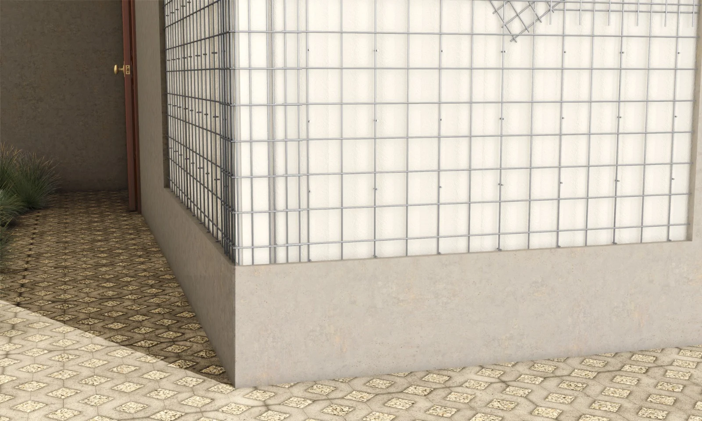

Paredes e fechamentos
Painel Monolit®
Painéis em EPS com telas de aço para sistemas de paredes e fechamentos.
Da construção civil à indústria, conectamos sua necessidade às soluções em EPS da Kingspan Isoeste. Com atendimento próximo, conhecimento técnico e agilidade.

Construção civil Infraestrutura Indústria
Explore as aplicações. Conheça os produtos e leve sua necessidade para quem entende de EPS.
9 soluções encontradas
Painéis em EPS com telas de aço para sistemas de paredes e fechamentos.
Elementos leves de enchimento para a composição de lajes.
Uma solução em EPS para a etapa de execução de vigas baldrame.
Peças em EPS com perfil de canaleta. Consulte formatos e aplicações.
Placas para aplicações de isolamento e composição de sistemas.
EPS em aplicações de enchimento leve para obras de infraestrutura.
Fornecimento para recortadores e processos de transformação.
Consulte peças e formatos para sua linha de fabricação de colchões.
Uma opção de fechamento de canteiro com acabamento visual estampado.
O EPS está presente em diferentes etapas e setores. A escolha começa pela aplicação e pela especificação do seu projeto.
A Silvério Representação aproxima construtoras, engenheiros, lajeiros e compradores industriais das soluções em EPS da Kingspan Isoeste.
Nosso trabalho começa ouvindo. Entendemos a aplicação, consultamos as opções e alinhamos as condições de fornecimento, com transparência e atenção ao que sua compra precisa.
Consulte as apresentações visuais dos produtos. Para especificações, medidas e informações de fornecimento, converse com a Silvério.
Aplicação, dimensões, quantidade, cidade de entrega e prazo desejado. Se o projeto especifica o material, envie também essa informação.
Comece pela especificação do responsável técnico. A Silvério ajuda a consultar as opções de produto, disponibilidade e condições comerciais.
Compartilhe o consumo por lote, a frequência de compra e o local de entrega. Esses dados ajudam a alinhar o fornecimento ao seu processo.
Conte o que você precisa. A Silvério ajuda a consultar o material e alinhar sua compra.
+55 47 99604-1108paulo@silveriorepresentacao.com.br